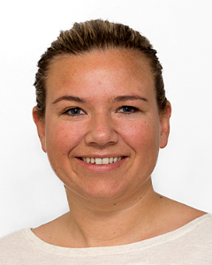
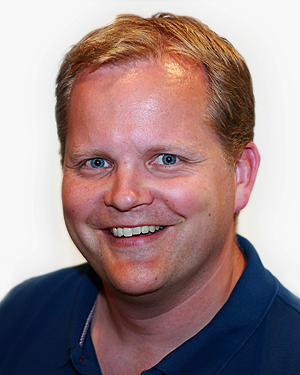
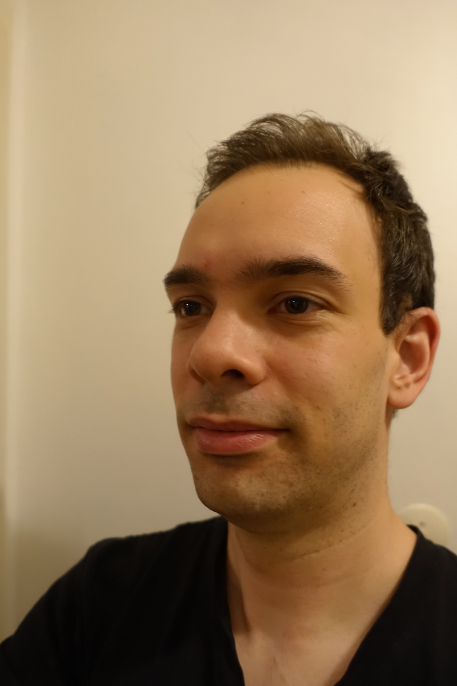
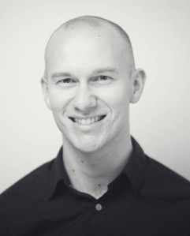

Foredrag
Bedre feilhåndtering uten exceptions i Scala?
Funksjonell programmering gir mange fordeler, blant annet er det mulig å få til bedre feilhåndtering. Men, hvordan kan man gjøre feilhåndtering uten exceptions? Scala har tilbyr flere måter å gjøre dette på, jeg kommer her til å se på de mest brukte teknikkene.
Lyntale (10 min), Fredag 14. oktober 14:00-15:00, track: Scala

Anita Andersen
Anita foretrekker å jobbe i et team. Hun er som person resultatorientert, arbeidsom og liker å utforske og lære ny teknologi. Anita er spesielt interessert i teknologier som er med på forenkle systemer og utviklingsprosesser. I det siste året har hun jobbet med Scala og har fått øyne opp for funksjonell-programmering.
Scala kan brukes som skriptespråk
Scala er i likhet med Java et "general purpose"-språk, som er mest kjent som et backend-språk. Men Scala har flere bruksområder, f.eks. frontend-utvikling med Scala.js, maskinvarenær utvikling med Scala Native, samt at Scala egner seg som implementasjonspråk for DSL-er (domain specific languages). I denne lyntalen vil jeg gjør folk oppmerksommme på at Scala også kan brukes til skripting, istedenfor Linux bash/shell, Perl eller Python. Som eksempler vil jeg vise to små skript som jeg har lagd selv med liten innsats, som jeg bruker i min utviklerhverdag sammen med Git og Maven.
Lyntale (10 min), Fredag 14. oktober 14:00-15:00, track: Scala
Are Husby
Systemutvikler/programmerer med Scala, Java, backend og objektorientering som kjernekompetanse. Begynte i Knowit i april 2015. Har åtte års erfaring som utvikler i Skattedirektoratet, hvor jeg de fire siste årene jobbet med med Java-programmering i flere prosjekter. Erfaringen med en stor organisasjon med IT-systemer med lang levetid har gitt meg interesse for blant annet kodekvalitet, smidig utviklingsmetodikk, testing og funksjonell programmering. Noen utviklere kommer til programmeringsfaget med en matematisk tankegang, mens andre er pragmatiske hackere. Jeg sammenligner god programkode med tekst i naturlige språk, og mener at billig og trygg forvaltning av programkode henger sammen med graden av lesbarhet for mennesker.
The cloud - what have you done for us lately…
Ting og tang vi har plukket opp underveis og erfaringer vi har gjort oss etter å ha levd i Amazon-skyen et års tid.
Lyntale (20 min), Fredag 14. oktober 14:00-15:00, track: Cloud

Rune Storløpa
Tåkefyrste, som har funnet sitt hjem i skyen de siste årene…
So you think you can cloud?
Har du noen gang lurt på hvordan det er å ta et prosjekt ut i skyen? I denne talken vil vi presentere våre erfaringer, og utfordringer som oppsto, da vi flyttet DiBK prosjektet over fra egenhostede servere til å kjøre i dockercontainere på Azure. Prosjektet er et Rubyprosjekt, men selve talken vil fokusere mest på infrastruktur og konfigurasjon.
, Fredag 14. oktober 14:00-15:00, track: Cloud
Henning Wold
Henning er en glad og engasjert systemutvikler som elsker teknologi og å bruke denne til å løse problemer på best mulig måte. Han trives med oppgaver som krever planlegging og gjennomtenking for å løses på en god måte. Han har variert erfaring, både fra backendsystemer utviklet med Java og Scala, til webapplikasjoner utviklet med Ruby on Rails, HTML5, CSS og JavaScript. I tillegg har han erfaring fra apputvikling til Apple iOS, da primært i det nye programmeringsspråket Swift. Han har bakgrunn fra NTNU der han fullførte sin mastergrad våren 2015.
Fuse - Real deal?
Hva skjer om du tar et par backend-utviklere og gir dem frie tøyler med et ferskt kryss-plattform mobilutviklingsrammeverk?
Siden påske har vi brukt fagtimene til å finne ut svaret på akkurat det, ved å prøve å lage en app i Fuse!
Vi ser kjapt på om Fuse er egnet og modent nok til kommersielt bruk, og viser fram tidenes app!
Lyntale (10 min), Fredag 14. oktober 14:00-15:00, track: UX & Dev Coop
Håkon Gulbrandsen & Joakim Lehn
Håkon og Joakim er backend utviklere som holder til på Oslo Kommune PFF prosjektet. De har særdeles lite app-utviklings erfaring å skryte av, og kan heller ikke noen ting om frontend, JavaScript eller noe annet som brukes i Fuse. Begge to har utdannelsen sin fra NTNU, og har ca et års fartstid som (betalte) utviklere.
Effects of Clean Code on Understandability
Lesbar og forståelig kode er viktig. Endringer som i utgangspunktet skal være lette og gjennomføre kan fort bli gjort komplekse og tidkrevende av dårlig kode. I boken Clean Code presenterer Robert C. Martin sin løsning på hvordan man kan oppnå forståelig og lesbar kode. Boken er populær og anerkjent, og "clean code" har blitt et synonym for pen og bra kode.
Men skriver du virkelig mer forståelig kode hvis du følger reglene og prinsippene til Robert Martin?
Lyntale (15 min), Fredag 14. oktober 15:15-16:15, track: Code & Frameworks
Henning Koller
Henning er en dyktig og samvittighetsfull konsulent som har vært ansatt i Knowit Objectnet siden 2014. Henning hadde sommerjobb i Knowit sommeren 2014 og har jobbet deltid ved siden av studier fram til han startet på fulltid høsten 2016. Henning har sin kjernekompetanse innefor scala og java, men har i tillegg god kompetanse på frontendteknologier som wicket, javascript og backbone og noe react.js. Henning er utdannet ved Universitetet i Oslo. I Mai 2016 leverte han sin masteroppgave, hvor han forsket på effekten av Clean Code på kodes forståelighet. I løpet av studietiden har Henning sittet i fadderstyret, samt vært med på å starte studentforeningen ProgNett. Henning jobber både frontend og backend, men trives best med backend. Han er interessert i ny teknologi og streber etter å lære nye og spennende ting.
Final? Gi meg const!
Som tidligere C++-utvikler var jeg fornøyd da jeg så at Java hadde et final-keyword. Gleden var dog kortvarig da jeg fant ut hvor liten effekt final faktisk har når man jobber i en stor og gammel kodebase. C og C++ er kanskje kjent for segfaults, minnelekasjer og udefinert oppførsel, men noe har de gjort rett. I denne talken introduserer jeg C++ sitt keyword const, hvilket problem dette løser og hvorfor Java burde ha noe tilsvarende.
Lyntale (10 min), Fredag 14. oktober 15:15-16:15, track: Code & Frameworks
Ole Bakstad
Ole er en faglig engasjert utvikler som interesserer seg for alt fra programmering til utviklingsprosesser og organisasjonskultur. Spesielt interessert i hvordan tekniske valg påvirker måten man jobber på, jobbhverdagen til de ansatte og evnen til å skape verdi over tid. Aktiv medlem av JavaBin og JavaZone sin programkomité.
Enkel overvåking av Spring Boot applikasjoner.
Spring Boot er en enkel måte å lage javaapplikasjoner som kan kjøres som frittstående tjenester. Rammeverket inkluderer funksjonalitet for administrasjon og overvåking av metrikker, men dersom du har mange applikasjoner trenger du en plass å samle alt dette. Løsningen er en egen adminapplikasjon med Spring Boot Admin og Javamelody.
Presentasjonen er basert på erfaringer gjort i DSB og som tas videre i Statsbygg.
Lyntale (20 min), Fredag 14. oktober 15:15-16:15, track: Code & Frameworks
Gunnar Velle
Gunnar er ein allsidig konsulent som har vore involvert i fleire spennande og samfunnsnyttige prosjekt innafor offentleg forvaltning, men også innan industri, media og telekom. Gunnar er alltid oppdatert på kva som finnes av nye teknologiar, verktøy og rammeverk innen Java og fri programvare, og har stor glede av å utnytte dette i prosjekt der teknologien passar inn. Gunnar har jobba med brukergrensesnitt i nettbaserte løsninger i ei årrekke. Han er spesielt interessert i grensesnittet mellom teknologi og menneske, og er opptatt av brukeropplevelsen i prosjekta han er involvert i. En av Gunnars sterkeste sider er at han har en god forståelse av teknologi og klarer raskt å sette seg inn i nye problemstillinger. Gunnar har vore med i driftsgruppa i Knowit Objectnet siden 2004, med ansvar for maskinvare, infrastruktur og brukerhjelp for ansatte.
Beyond Compare - diff it all
Kunne du tenkte deg å alltid klare "Finn 5 feil" i Donald, enkelt lage diff-rapporter eller automatisk synkronisere kataloger og filer fra et grafisk brukergrensesnitt (dvs uten å lære deg Rsync). Er du ikke helt komfortabel med "git diff", men liker å bruke git fra kommandolinja? Beyond Compare er en viktig del av min Git commit workflow og i denne lyntalen vil jeg vise noen smakebiter hva det kan brukes til.
Lyntale (10 min), Fredag 14. oktober 15:15-16:15, track: Tools
Henrik Dæhli
Henrik er senior Javautvikler med erfaring fra utvikling i både store forretningskritiske systemer med svært høye krav til oppetid og kodekvalitet, til små applikasjoner på mobil plattform. Han er sertifisert ScrumMaster, liker å jobbe smidig med fokus på høy kvalitet. I prosjekt trives han å samarbeide tett med forretningssiden for å finne de beste løsningene. I sine siste prosjekter har han fått erfaring med kontinuerlinge leveranser, skyløsninger og hvordan man forbedrer store legacy-systemer samtidig som man også leverer ny funksjonalitet.
Git: Fra din verste fiende til din beste venn.
Jeg vil tro de fleste ser på og bruker Git kun som et versjonskontrollsystem, nesten som et slags nødvendig onde.
I denne presentasjonen vil jeg vise fram hvordan man kan bruke Git som et kodeverktøy, og hvordan det kan gjøre deg til en mer effektiv utvikler.
Lyntale (20 min), Fredag 14. oktober 15:15-16:15, track: Tools

Christoffer Eliesen
Christoffer er en engasjert utvikler som brenner for IT. Han er nysgjerrig og glad i å lære nye ting. Han stiller høye krav til seg selv og det han leverer, men er pragmatisk når det trengs. Hans interesse for IT spenner seg hele veien fra operativsystem til brukergrensesnitt, og han er derfor en naturlig fullstack og "devops" utvikler. I disse tider er det frontend som er i vinden og Christoffers hjerte følger etter. React og Node er spennende teknologier som passer han midt i blinken. Både "gammel" jQuery og ny React er teknologier som er givende å jobbe med for Christoffer. Flere års erfaring har gjort han trygg i rollen som konsulent. Han er beskjeden, samtidig som han er en dyp tenker med rolige øyne og et brennende hjerte.
LISA-prosjektet tok i bruk Postman and you won't believe what happened next!
Postman hjelper deg å utvikle API'er raskere. Jeg skal vise hvordan du kan bruke Postman i ditt prosjekt, med erfaringer fra LISA-prosjektet. Du vil lære noe om hvordan du kan kjøre requests, teste endepunkter, dokumentere APIer, og hvordan Postman gjør det enkelt å samarbeide om APIer.
Lyntale (15 min), Fredag 14. oktober 15:15-16:15, track: Tools

Stian Lågstad
Stian ble uteksaminert fra Universitetet i Oslo i juni 2016 med mastergrad i bioinformatikk. Gjennom studiene har han fått erfaring med Python, R, Java, LISP, og gjennom deltidsjobben som konsulent for Realfagsbiblioteket jobbet han mye med Javascript. Hos Knowit Objectnet gikk han inn i LISA-prosjektet hos NSB, der han jobber med Java og rammeverk som Spring og Feign.
Hvordan utvikle og dokumentere dine React componenter med React Storybook
I denne lyntalen skal jeg vise fram React Storybook, et UI utviklingsverktøy for React komponenter. Med plugins kan det også bli brukt til å generere dokumentasjon for API og bruk av dine komponenter.
Lyntale (10 min), Fredag 14. oktober 15:15-16:15, track: Frontend
Alexander Bjerkan
Alexander har god erfaring som systemutvikler i smidige team og har bygget opp betydelig kompetanse innenfor et bredt spekter av teknologier og ansvarsområder. Han har jobbet med alt fra små hobbyprosjekter til store samfunnskritiske systemer og han brenner for håndverket og kvaliteten i IT-faget. Som person søker Alexander stadig å utvikle sin tekniske horisont med nye teknologier og kunnskap.
Typesikker front-end med Elm
Har du noensinne gjort endringer i JavaScript og vært trygg på at du ikke brekker noe? Ikke jeg heller. Elm er et funksjonelt språk som kompilerer til JavaScript. Elm-kode er rask, typesikker, enkel å endre og meget testbar. Elm-kompilatoren gir forståelige feilmeldinger og utelukker kjøretidsfeil. Dette foredraget introduserer Elm og demonstrerer hvordan man kan lage en enkel webapp uten å tenke på JavaScript en eneste gang.
Lyntale (20 min), Fredag 14. oktober 15:15-16:15, track: Frontend
Runar Furenes
Runar hadde sommerjobb i Knowit i 2011. Etter endt utdannelse jobbet han et halvt år i statlig sektor, før han begynte i fast stilling hos Knowit desember 2013. Han har erfaring med ulike programmeringsspråk og teknologier, og er spesielt opptatt av funksjonell programmering. Fra 2013 til dags dato er Runar med i Oslo Kommunes utviklingsprosjekt.
Hvordan programmere Microsoft HoloLens
Hvorfor er HoloLens forskjellig fra andre Virtual Reality briller, og hvordan programmerer man for den. API støtte for world coordinates, gestures, gaze, voice, spatial sound og spatial mapping. Ja, jeg tar med en HoloLens.
Lyntale (20 min), Fredag 14. oktober 15:15-16:15, track: Frontend
Christian Egeberg
Christian er en .Net utvikler med fokus på skyarkitektur og mobil. Han har dyp interesse for alle slags dingser og teknologi, liker å gjøre ting grundig, og tenker ofte utenfor bokser. Christian kan til tider sette umåtelig pris på bevisst å befinne seg på feil jorde.
Open Space
En selvorganiserende konferanseform. Vi lager agenda sammen. Detaljer, les her https://en.wikipedia.org/wiki/Open_Space_Technology
Open Space, Fredag 14. oktober 16:30-18:00, track: Alle rom
Fagstrategi
Hva skal vi jobbe med fremover og hvordan skal vi jobbe? Stikkord er autonome team og kontinuerlig forbedring av kundens produkter!
Foredrag (30 min), Lørdag 15. oktober 10:00-10:30, track: Felles

Jan Henrik Gundelsby
Jan Henrik er fagsjef i Knowit Objectnet. Jobber for tiden litt hos Eika med arkitektur. Driver også med salg, marked og hvordan vi skal få de rette nye prosjektene. Glad i naturen og lidenskapelig opptatt av fag!

Haakon Spilde
Haakon er fagsjef i Knowit Objectnet. Haakon er lidenskapelig opptatt av prosess og metode, med særlig fokus på Agile teknikker. Hvordan lære av sine feil, hvordan endre sine metoder og prosesser til det bedre og hvordan få et team til å fungere optimalt er tema som opptar Haakon.
Presentasjonsteknikk
Nesten alle PowerPoint-presentasjoner er elendige. Tilskuere klager stille på kvaliteten, men gir sjelden reell feedback til foredragsholdere. Og foredragsholderne selv får minimalt med opplæring om hverken menneskelige eller tekniske aspekter ved å holde en presentasjon. For å strø salt i såret er det ingen av de som holder foredrag om presentasjonsteknikk som er gode på det tekniske, så de prater kun om det menneskelige. I dette foredraget dekker vi alt. Vi tar vi en praktisk tilnærming, der alt du lærer her kan brukes direkte i ditt foredrag. Ta med laptopen og åpne notepad.
Foredrag (60 min), Lørdag 15. oktober 10:45-11:45, track: Felles
Michael Johansen
IT-konsulent på dagen, startup founder om natten. På NTNU studerte Michael entreprenørskap, informatikk og psykologi. Under studiene tok han et år fri for å sitte i NTNUs styre. I startup-verden har han fått førstehåndserfaring med startup-scenen i både Boston og Silicon Valley. Mennesker og maskiner er de to tingene som interesserer ham mest. Forøvrig er han temmelig systematisk. Michael bryr seg mer enn de fleste om presentasjonsteknikk, og det er et tema han gjerne vil dele sine tanker om på fagseminaret i Fredrikstad.
Lean and shit! What's the Fuzz, kan æ ikkje bare få kode i fred?
Hva er Lean? Hvor kommer det fra og hvilken sammenheng har det med systemutvikling. En sammenligning med tradisjonell tankegang og Scrum, Kanban, Lean Startup, DevOps etc. Hva er egentlig Waste og flyt og slikt. Hvorfor betyr det noe for deg, hva bør du vite og hva betyr det for Knowit.
Lyntale (20 min), Lørdag 15. oktober 12:00-13:00, track: Arkitektur & metode

Arne Løvold
Arne Løvold er konsulentleder i Knowit og en erfaren IT-rådgiver og IT-leder med kompetanse innen rådgiving, teknologi, løsningsarkitektur, forretnings¬utvikling, strategi, ledelse, salg, kompetanse¬utvikling, kundeansvar og internasjonal ledelse. Han har erfaring som leder, prosjektleder, prosjektansvarlig og løsningsutforming for integrasjon-, utvikling-, Business Intelligence og ERP-prosjekter. I tilleg har han teknisk erfaring med arkitektur, systemutvikling, infrastruktur og metoder. Han er engasjert i IT-bransjen via Smidigkonferansen og et Masterprogram på UiO.
Hvordan vi forbedret en kompleks løsning for prosessering av millioner av ytelser i NAV
Mitt forrige prosjekt gikk ut på å rapportere millioner av NAVs ulike ytelser (feks sykepenger) til Skatteetaten og SSB ("A-ordningen"). Teamet mitt overtok en lite egnet og kompleks batch-løsning som ikke taklet feilsituasjoner eller feilrapportering, hadde dårlig ytelse og selvfølgelig passe rotete kode. Vi forbedret løsningen ved å lage mange små, separate steg, samt å bruke enkel event sourcing ("aldri kjør update eller delete i databasen"). Denne presentasjonen vil gi deg økt innsikt i feilvalg innen arkitektur, kodestruktur og databasebehandling, og hvordan du kan løse disse.
Lyntale (15 min), Lørdag 15. oktober 12:00-13:00, track: Arkitektur & metode

Yngvar Kristiansen
Yngvar er utvikler og har jobbet med back-end, front-end, drift og programvarearkitektur. Han har erfaring fra komplekse, forretningskritiske applikasjoner, behandling av store datamengder, og web-applikasjoner. Yngvar har personlig interesse for kodekvalitet, testing, arkitektur og brukervennlighet, og fokuserer alltid på å gjøre ting riktig framfor å ta snarveier. Samtidig sikter han på å løse forretningsbehov, og er løsningsorientert i arbeidet sitt. Teamarbeid og diskusjoner er noe Yngvar er vant med og trives med, og han ses på som en lagspiller. Han jobber likevel godt selvstendig, og er en pådriver for progresjon.
Lei av rotete arkitekturtegninger? Ta en titt på C4 modellen.
På Knowit sin arkitektskole 2015/2016 presenterte Simon Brown C4 modellen. Flere enn de som gikk på og skal gå på Knowit sin arkitektskole kan ha nytte av å kjenne til C4 modellen og hvordan beskrive software arkitektur på en oversiktlig måte. Foredraget vil ta for seg C4 modellen som ble presentert på Knowit sin arkitektskole beskrevet i bøkene til Simon Brown: "Software Architecture for Developers" og "The Art of Visualising Software Architecture (Communicating software architecture with sketches, diagrams and the C4 model)".
Lyntale (10 min), Lørdag 15. oktober 12:00-13:00, track: Arkitektur & metode
Rune Myrdal
Rune har jobbet i 18 år som systemutvikler, de siste 13 årene i Knowit Objectnet. Han jobber like gjerne som utvikler som teknisk eller funksjonell arkitekt. De siste årene har Rune jobbet hos SVV, Politiet, Telenor, TAD (ELSÆR), Skatteetaten, Oslo kommune (PET) og er nå tilbake hos Skatteetaten og skal være med å modernisere Folkeregisteret.
Kotlin – Et språk for alt!
Du har mest sannsynlig hørt JVM språk som Scala, Clojure, Java, Ceylon eller kanskje Jython eller Jruby?
Hold deg fast, Kotlin er enda et nytt språk som kjøres på JVM’en. Kotlin er utviklet av Jetbrains og har endelig kommet ute av betafasen.
Kotlin er et enkelt og statisk typet programmeringspråk som er fri for null pointer exceptions og 100% kompatibel med Java, og det kan brukes til mobil- og nettleser utvikling.
Målet med denne lyntalen er å gi deg noen nye ideer om hvordan du kan ta i bruk Kotlin i ditt neste prosjekt.
Lyntale (15 min), Lørdag 15. oktober 12:00-13:00, track: Other Languages
Kennet Vuong
Kennet er en ivrig utvikler som stadig er på jakt etter nye utfordringer og teknologier. Han ser på seg selv som en full-stack utvikler som trives godt på front-end siden med web og mobil utvikling, men også på back-end med database og server applikasjoner. Gjennom tidligere erfaringer har Kennet utviklet mobil applikasjoner ved bruk av webteknologier som JavaScript, HTML5 og CSS. Kennet har erfaring med rollen som DevOps-utvikler og har jobbet mye med objektorientert systemutvikling på JVM'en og har stor interesse for forskjellige JVM språk som Kotlin og Clojure. Som person er Kennet positiv, ansvarsfull og ambisiøs, han ønsker alltid å utvikle seg faglig og liker godt å prøve nye og krevende utfordringer som kan bidra til at Kennet blir en bedre utvikler og konsulent.
Hippieprogrammering i Max
Max er et programmeringsspråk som lar deg kombinere media og hardware på kreative måter. Språket ble laget på midten av åttitallet, men er fortsatt poplært. Det er et visuelt programmeringsspråk. Til tross for dette, er språket givende å programmere i og har et godt utviklingsmiljø.
Språket finnes i en open source variant som heter Pure Data.
Dette foredraget vil gi en kort innføring i språket og demoer for å vise mulighetene. Hensikten er å gi en overordnet forståelse av språket og mulige anvendelsesområder.
Foredraget egner seg både for de som kan programmere og ikke-programmere. Språket er veldig annerledes andres språk, så en begrenset “teknisk balast” kan tilogmed være en fordel.
Lyntale (20 min), Lørdag 15. oktober 12:00-13:00, track: Other Languages
Andreas Bade
Andreas har jobbet så lenge i Knowit at han har e-postadresse på to bokstaver. Han har programmert profesjonelt over i ti år, i hovedsak i Java, men også i .net. Han jobber nå som prosjektleder og teamleder, men er fortsatt glad i fikle med ting som er morsomme å fikle med.
Hvorfor det er for kjedelig å tappe øl med en knapp
Lyntale (20 min), Lørdag 15. oktober 12:00-13:00, track: Soft skills
Henrik Stene
Henrik er engasjert, fremtidsrettet og opptatt av at kunden skal bli fornøyd. Det er viktigere å gi litt ekstra og sørge for kvalitetsarbeid. Dette krever planlegging og motivasjon, som er en del av Henrik sine mål som konsulent og utvikler. Ved siden av forskjellige interesser innen IT og teknologi, er Henrik interessert i etikk, filosofi og rettsvitenskap. Henrik har flere års erfaring som lærer og seminarforeleser innen programmeringsfag ved Universitetet i Oslo og har jobbet som konsulent siden sommeren 2014.
Nytt konsept for reiseassistent
Lyntale om å ha faggruppe om sitt aktuelle prosjekt, og om samarbeid mellom utviklere, designere, og kunde. Vi utfordrer Ruter med våre egne ideer gjennom eksperimenter i faggruppe.
Lyntale (10 min), Lørdag 15. oktober 12:00-13:00, track: Soft skills
Stian Flatby
Stian er en systemutvikler med erfaring på mobil, desktop, web, og backend. Han har en dyp indre motivasjon for utvikling, og interesserer seg spesielt for iOS-plattformen med både Objective-C og Swift. Stian er hardtarbeidende og opptatt av kvalitet, og trives godt med å jobbe både selvstendig og i team. Han jobber ofte med småprosjekter på fritid og i ferie for å lære mer og holde seg oppdatert. Stian har Bachelor i Informasjonsteknologi med fokus på applikasjonsutvikling fra Høgskolen i Oslo og Akershus.
Johan Reitan
Johan er en systemutvikler med master i Datateknikk ved NTNU der han spesialiserte seg i kunstig intelligens. Hovedinteressen har vært maskinlæring, gjerne sammen med språkteknologi, som han har jobbet mye med. Linux og åpen kildekode er en lidenskap, og mye av fritiden hans går med på eksperimentering med og bidrag til åpne prosjekter. Han har mye erfaring med Python og diverse Python-rammeverk, samt Android og Java, men har også jobbet med .NET.